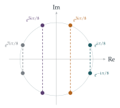

STEP III 2013, 문제 4
계속 읽기 전에 문제를 먼저 읽어 보자. 문제는 STEP Support Programme의 문제 데이터베이스에 있다: step.maths.org/questions/13-s3-q4
도입
\(\cos\frac{\pi}{8}\cos\frac{3\pi}{8}\cos\frac{5\pi}{8}\cos\frac{7\pi}{8}\)의 값은 얼마인가? 각 인수는 제곱근이 겹겹이 들어간 복잡한 수이지만, 이들의 곱은 정확히 \(\frac18\)이다. 같은 간격으로 놓인 각에서의 코사인 값들의 곱은 이처럼 자꾸 간단한 수로 정리되는데, 이 문제는 그 이유를 설명해 준다. 요령은 이 각들을 어떤 다항식(polynomial)의 근(root)의 편각(argument)으로 알아보고, 그 다항식을 인수분해(factorise)한 다음, 교묘하게 고른 값을 대입하는 것이다.
복소수 범위에서는 모든 다항식이 일차 인수(linear factor)들로 완전히 인수분해된다. 실수 범위에서는 실수가 아닌 근들이 켤레(conjugate) 쌍으로 나타나고, 이 쌍들이 합쳐져 실수 계수 이차 인수가 된다. 여기서는 이 두 사실이 모두 드러나며, 특히 두 번째 사실 덕분에 실근이 하나도 없는 \(z^{2n} + 1\)을 실수 계수 이차식(quadratic)들의 곱으로 나타낼 수 있다.
시작하기 전에
복소평면(complex plane)에서 \(z^{2n} = -1\)의 해들은 어디에 있는가? \(n = 2\)와 \(n = 4\)일 때 그려 보아라.
이 해들의 절댓값(modulus)은 모두 \(1\)이고, 편각 \(\theta\)는 \(2n\theta = \pi + 2m\pi\)를 만족하므로 \(\theta\)는 \(\frac{\pi}{2n}\)의 홀수 배이다. 이 해들은 단위원(unit circle) 위에서 정\(2n\)각형을 이루며, 어느 꼭짓점도 실수축 위에 놓이지 않도록 회전되어 있다(그림 5.3.1). 이들은 실수축에 대해 서로 대칭인 켤레 쌍 \(e^{\pm\mathrm{i}\theta}\)로 짝지어진다.
차근차근 풀기
단계 1 켤레 쌍은 실수 계수 이차식을 준다
\((z - e^{\mathrm{i}\theta})(z - e^{-\mathrm{i}\theta}) = z^2 - (e^{\mathrm{i}\theta} + e^{-\mathrm{i}\theta})z + 1 = z^2 - 2z\cos\theta + 1\).■
단계 2 인수분해
\(-\pi < \theta \leq \pi\)인 \(-1\)의 \(2n\)제곱근은 \(e^{\pm\mathrm{i}\theta_k}\)이고, 여기서 \[\theta_k = \frac{(2k - 1)\pi}{2n}, \qquad k = 1, 2, \ldots, n.\] 이들은 서로 다른 \(2n\)개의 수이고 모두 \(2n\)차 다항식 \(z^{2n} + 1\)의 근이므로, 이것이 근의 전부이며 \[z^{2n} + 1 = \prod_{k=1}^{n}(z - e^{\mathrm{i}\theta_k})(z - e^{-\mathrm{i}\theta_k}) = \prod_{k=1}^{n}\bigl(z^2 - 2z\cos\theta_k + 1\bigr). \qed\]

단계 3 \(z = \mathrm{i}\) 대입하기
\(\mathrm{i}^2 - 2\mathrm{i}\cos\theta + 1\)은 무엇인가? 또 \(n\)이 짝수일 때 \(\mathrm{i}^{2n} + 1\)은 무엇인가?
각 인수는 \[\mathrm{i}^2 - 2\mathrm{i}\cos\theta_k + 1 = -2\mathrm{i}\cos\theta_k,\] 가 되므로 우변은 \((-2\mathrm{i})^n\prod_k\cos\theta_k\)이다. 좌변은 \(\mathrm{i}^{2n} + 1 = (-1)^n + 1\)이고, \(n\)이 짝수이면 이 값은 \(2\)이다. 또 \(n\)이 짝수일 때 \[(-2\mathrm{i})^n = 2^n(-\mathrm{i})^n = 2^n\bigl((-\mathrm{i})^2\bigr)^{n/2} = 2^n(-1)^{n/2}.\] 따라서 \[\prod_{k=1}^{n}\cos\theta_k = \frac{2}{2^n(-1)^{n/2}} = (-1)^{\frac12 n}2^{1-n}. \qed\] \(n = 4\)이면 이것은 도입에서 본 곱이 된다: \((-1)^2 2^{-3} = \frac18\).
단계 4 \(n\)이 홀수일 때
\(n\)이 홀수이면 각 \(\theta_k\) 가운데 하나가 \(\frac\pi2\)와 같다. 그것은 어느 것이며, 그 때문에 왜 \(z = \mathrm{i}\)를 그대로 대입하는 것이 쓸모없게 되는가?
\(k = \frac{n+1}{2}\)일 때 \(\theta_k = \frac{n\pi}{2n} = \frac\pi2\)이므로 해당 인수는 \(z^2 + 1\)이고, 이는 \(z = \mathrm{i}\)에서 \(0\)이 된다. 그러면 양변이 모두 \(0\)이 되어 아무것도 알 수 없다. 이를 피하는 방법은 먼저 그 인수로 나누어 없애는 것이며, 문제에 주어진 항등식이 바로 그렇게 한 것이다.
인수분해의 양변을 \(1 + z^2\)으로 나누고, \(z = \mathrm{i}\)를 대입한 뒤 정리하여라. 남은 코사인들을 짝지어야 할 것이다.
인수 \(z^2 + 1\)(\(k = \frac{n+1}{2}\)인 항)로 나누면 \[1 - z^2 + z^4 - \cdots + z^{2n-2} = \prod_{k \neq \frac{n+1}{2}}\bigl(z^2 - 2z\cos\theta_k + 1\bigr).\] \(z = \mathrm{i}\)에서 좌변의 모든 항은 \((-z^2)^j = 1^j = 1\)이고 항이 \(n\)개이므로 좌변은 \(n\)이다. 우변은 \((-2\mathrm{i})^{n-1}\prod_{k \neq \frac{n+1}{2}}\cos\theta_k\)이다. \(n - 1\)이 짝수이므로 \((-2\mathrm{i})^{n-1} = 2^{n-1}(-1)^{(n-1)/2}\)이다.
이제 각들을 짝지어 보자. \(\theta_{n+1-k} = \pi - \theta_k\)이므로 \(\cos\theta_{n+1-k} = -\cos\theta_k\)이다. 남은 \(n - 1\)개의 인수는 \(k = 1, \ldots, \frac{n-1}{2}\)에 대하여 이러한 쌍 \(\frac{n-1}{2}\)개를 이루고, 각 쌍은 \(-\cos^2\theta_k\)를 기여한다. 따라서 \[n = 2^{n-1}(-1)^{(n-1)/2}\cdot(-1)^{(n-1)/2}\prod_{k=1}^{(n-1)/2}\cos^2\theta_k = 2^{n-1}\prod_{k=1}^{(n-1)/2}\cos^2\theta_k,\] 이고, 이로부터 \(\prod\cos^2\theta_k = n2^{1-n}\)을 얻는다. \(k = \frac{n-1}{2}\)인 마지막 인수는 문제에서처럼 \(\cos^2\frac{(n-2)\pi}{2n}\)이다.■
\(n = 3\)으로 확인해 보자: \(\cos^2\frac\pi6 = \frac34 = 3 \cdot 2^{-2}\).
돌아보기
근을 알면 다항식을 안다. 다항식은 (상수배를 제외하면) 근에 의해 결정되므로, \(z^{2n} + 1\)의 근을 나열하는 것만으로 인수분해를 얻었다.
교묘한 값을 대입하라. \(z = \mathrm{i}\)를 대입하자 모든 이차 인수가 코사인의 상수배로 바뀌었다.
대입했더니 \(0 = 0\)이 나오면, 먼저 나누어라. \(n\)이 홀수일 때는 인수 하나가 \(z = \mathrm{i}\)에서 \(0\)이 되었으므로, 대입하기 전에 그 인수를 제거하였다.
숨은 수학
\(z^{2n} + 1\)이 \(\mathbb{C}\) 위에서 일차 인수들로 완전히 인수분해된다는 사실은 대수학의 기본정리(fundamental theorem of algebra)의 특수한 경우이다. 이 정리는 복소수 계수의 상수가 아닌 모든 다항식이 복소수 근을 가지며, 따라서 일차 인수들로 완전히 인수분해된다는 것이다. 가우스(Gauss)는 1799년 박사 학위 논문에서 널리 인정받은 최초의 증명을 내놓았고, 이후에도 여러 차례 이 정리로 돌아와 새로운 증명을 제시하였다. 이 정리의 결과로, 실수가 아닌 근은 1단계에서 본 것과 똑같이 켤레 쌍으로 나타나므로, 모든 실수 계수 다항식은 실수 계수의 일차 인수와 이차 인수들로 인수분해된다. 이 정리는 이름은 “대수학”이지만 실질은 해석학이다. 모든 증명은 연속성 같은 실수의 어떤 성질을 사용하며, 복소해석학(complex analysis) 첫 강의에서 가장 매끄러운 증명 가운데 하나를 보게 될 것이다.
사인과 코사인의 곱
이 방법으로 항등식들을 한 무리 얻을 수 있다. \(z^{2n} + 1\) 대신 \(z^n - 1\)을 사용하면 \[\prod_{k=1}^{n-1}\sin\frac{k\pi}{n} = \frac{n}{2^{n-1}},\] 을 얻으며, 이것의 기하학적 형태는 5.4 절에서 증명된다. 이런 항등식들은 진동계의 분석(용수철로 연결된 \(n\)개의 질점의 진동수에는 \(\sin\frac{k\pi}{2(n+1)}\)이 나타난다)과 세기 문제(어떤 그래프(graph)의 신장 트리(spanning tree)의 개수나 직사각형의 도미노 타일링(domino tiling)의 개수가 코사인들의 곱으로 주어진다)에 등장한다. \(m \times n\) 직사각형의 도미노 타일링에 대한 Kasteleyn의 1961년 공식은 \(\cos^2\frac{j\pi}{m+1}\)과 \(\cos^2\frac{k\pi}{n+1}\)로 이루어진 식들의 이중 곱이다.
사고 기술
같은 간격으로 놓인 각에서의 삼각함수 값들의 곱을 계산하려면, 그 값들이 간단한 다항식의 근에서 나온 것임을 알아보고, 인수분해한 뒤, 편리한 값을 대입하라.
어떤 값을 고르느냐가 기술의 핵심이다. 여기서는 \(z = \mathrm{i}\)가 각 이차 인수를 코사인으로 바꾸어 주었다. 다른 값(\(z = 1\)이나 \(z = -1\) 등)을 고르면 다른 항등식을 얻는다.
더 도전하기
칠각형과 관련된 곱. 소문항 (ii)에 \(n = 7\)을 적용하여 \(\cos\frac{\pi}{14}\cos\frac{3\pi}{14}\cos\frac{5\pi}{14} = \frac{\sqrt7}{8}\)임을 보여라. 그리고 \(\cos\frac{\pi}{7}\cos\frac{2\pi}{7}\cos\frac{3\pi}{7} = \frac18\)임을 보여라. (힌트: \(\cos\theta = \sin(\frac\pi2 - \theta)\)를 이용하여 각들 사이의 관계를 찾거나, 항등식 \(\sin 2x = 2\sin x\cos x\)를 반복해서 사용하여라.)
또 다른 대입. 인수분해에 \(z = 1\)을 대입하여 다음을 보여라. \[\prod_{k=1}^{n}\sin\frac{(2k-1)\pi}{4n} = 2^{\frac12 - n}.\]
\(z^6 + 1\)을 인수분해하기. \(z^6 + 1\)을 세 개의 실수 계수 이차식의 곱으로 나타내고, 전개하여 답을 확인하여라.
사인. \(z^{2n} - 1\)을 같은 방법으로 인수분해하고 \(z^2 - 1\)로 나누어 다음을 보여라. \[\prod_{k=1}^{n-1}\sin\frac{k\pi}{2n} = \frac{\sqrt n}{2^{n-1}}.\]
더 읽을거리
Tristan Needham, Visual Complex Analysis (Oxford University Press). 『시각적 복소해석학』. 2장에서 1의 거듭제곱근(roots of unity)과 다항식을 아름다운 그림과 함께 다룬다.
Benjamin Fine & Gerhard Rosenberger, The Fundamental Theorem of Algebra (Springer). 『대수학의 기본정리』. 해석학, 대수학, 위상수학(topology)에서 나온 이 정리의 여러 증명을 학부생을 위해 서술하였다.
Paul Nahin, An Imaginary Tale (Princeton University Press). 『허수 이야기』. 1의 거듭제곱근과 그 쓰임을 포함한 \(\sqrt{-1}\)의 역사.